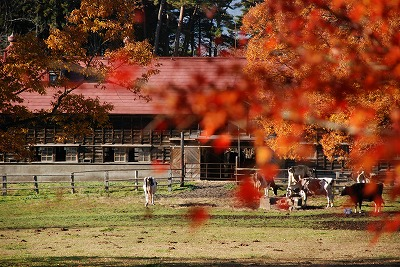
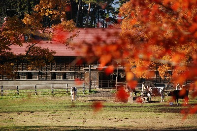

小岩井農場の紅葉
 

100年以上の歴史を持ち、民間農場としては我が国唯一の総合農場として称
されている小岩井農場。例年10月下旬に紅葉がピークを迎え、11月上旬まで
色づく木々と農場の風景を見ることができます。毎日開催されている非公開の
森林エリアを巡る「ファームトラクターライド」や、季節ごとに行われるウォ
ークイベントなど、自然を楽しめるツアーもあります。
観光情報
ジャンル
イベント
所在地
岩手県岩手郡雫石町丸谷地36-1小岩井農場 まきば園
電話番号
019-692-4321
営業日
10月末
[アクセス経路]
東北自動車道 盛岡ICより約15分（12㎞）
JR盛岡駅前「10番」乗場より「小岩井農場まきば園行き」バス乗車（約17km 約35分）